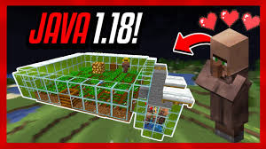
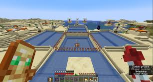

User4: El nuevo bioma da algo de repelús, pero la nueva madera es bastante bonita para hacer casas
¿Qué es Minecraft Técnico?
Minecraft tecnicón se podría definir como una manera de jugar que automatiza acciones, normalmente las de reunir recursos com pudiera ser comida, materiales, etc. También consiste en aprovechar fallos en el codígo de minecraft para conseguir estos materiales y otros que no podrias conseguir de manera normal.
Como mejorar tu manera de jugar
Para poder aprovechar esta manera de jugar, debes conocer como funcionan las mecanicas del juego y como aprovecharlas. Para ello recomiendo informarte de como funcionan estas mecanicas, mobs, procesamiento del juego, etc. Esto lo puedes hacer investigando por ti mismo y probando al jugar, pero recomendaria iformatrte de otros jugadores y Youtubers de esta categoría.
Granajas y trucos
¿Como funciona la Granja de aldeanos?
Al igual que otros monstruos reproducibles, los aldeanos no pueden reproducirse simplemente alimentándolos con comida. Un par de aldeanos necesitan al menos una cama desocupada y suficientes alimentos. En el diseño de granja anterior, un granjero cultiva zanahorias y las arroja a un par de aldeanos rodeados de camas.

¿Como funcionan las granjas de hierro?
La cría de gólems de hierro utiliza la mecánica de la aldea para producir hierro y amapolas . Por lo general, una granja de gólems de hierro es una aldea construida por el jugador en la que se generan gólems y luego se los mata inmediatamente o se los traslada a una celda de detención fuera de los límites de la aldea para matarlos más tarde.

Consejos
-Para evitar lag en mundos tecnicos con muchas granjas se recomienda poner compostadores encima de las tolvas, para evitar que el juego comprueba si hay items encima de la tolva y evita realizar esta funcoion que suel causar una gran cantidad de lag.
-Los nuevos crafters permiten tanto craftear items como descomponerlos, como el hueso a polvo de hueso o los lingotes a perpitas, estos son muy utiles para administrar mejor el espacio de los recursos como la producción de hierro en las granjas de hierro, pudiendo transformar los lingotes de los golems en bloques de hierro.
Curiosidades
-En versiones anteriores de Minecraft el daño de los arcos dependia de la velocidad que iva la flecha por lo que podias clavarla en algun bloque y explotar una gran cantidad de dinamita para hacer que matase a caulquier mob de un solo golpe.
-En la version 1.12 de Minecraft existe un fallo en la generación del mundo que ocurre al pasar los 12.550.821 bloques de distancia desde el spawn, cosa que lleva meses sin parar seguidos o semanas sin parar en el nether para poder llegar, cosa que solo unos pocos jugadores an conseguido.
Y el universo dijo que tú eres el universo probándose a sí mismo, hablándose a sí mismo, leyendo su propio código.
Y el universo dijo Te amo, porque tú eres el amor.
Y el juego se terminó, y el jugador despertó del sueño. Y el jugador empezó un nuevo sueño.